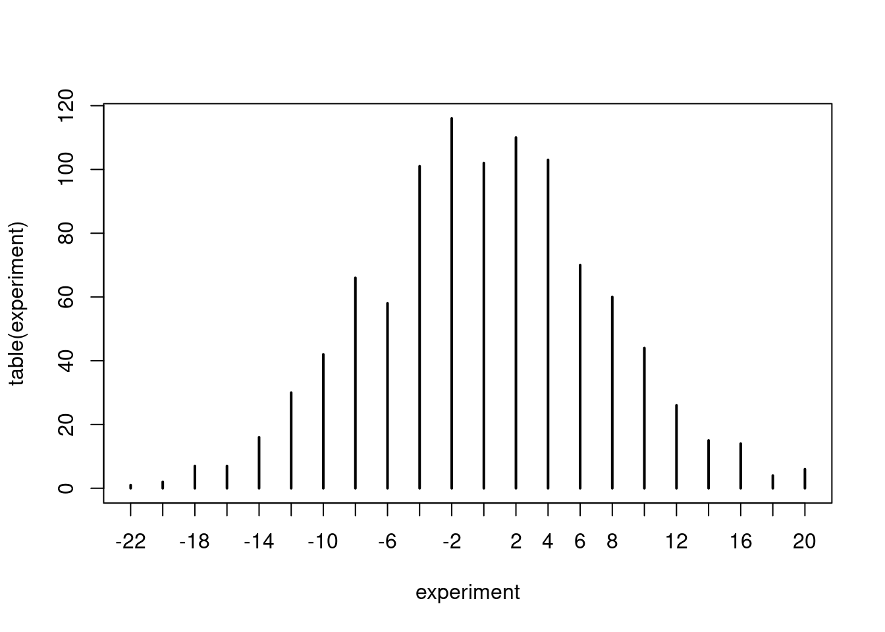

5.5 A game of chance
For the rest of this chapter we will develop various Monte Carlo simulations. We start simulating a little game of chance.
Peter and Paul play a simple game involving repeated tosses of a fair coin. In a given toss, if heads is observed, Peter wins 1€ from Paul; otherwise if tails is tossed, Peter gives 1€ to Paul. If Peter starts with zero euros, we are interested in his fortune as the game is played for 50 tosses.
We can simulate this game using the R sample() function. Peter’s winning on a particular toss will be 1€ or -1€ with equal probability. His winnings on 50 repeated tosses can be considered to be a sample of size 50 selected with replacement from the set {1€, -1€}.
set.seed(2021)
win <- sample(c(-1,1),size = 50, replace = T)
head(win)## [1] -1 1 1 1 -1 1For this particular game Peter lost the first game, then won the second, the third and the fourth and so on.
Suppose Peter is interested in his cumulative winnings as he plays this game. The function cumsum() computes the cumulative winnings of the individual values and we store the cumulative values in a vector named cumul.win.
cumul.win <- cumsum(win)
cumul.win## [1] -1 0 1 2 1 2 3 4 5 6 5 6 7 6 5 4 3 2 3 2 3 4 3 4 3 2 3 4 5 6 5 6 5 6 7 6 7 6 7 6 5 4 5 6 5 4 5 6 7 8So at the end of this specific game Peter won 8€. Figure 5.1 reports Peter’s fortune as the game evolved. We can notice that Peter was in the lead throughout almost the whole game.
plot(cumsum(win), type="l" ,ylim=c(-25, 25))
abline(h=0)Figure 5.1: Peter’s fortune throughout one simulated game.
Of course this is the result of a single simulation and the outcome may be totally different than the one we saw. Figure 5.2 reports four simulated games: we can see that in the first one Peter wins, in the second he almost breaks even, whilst in the third and fourth he clearly loses.
set.seed(2021)
par(mfrow=c(2, 2))
for(j in 1:4){
plot(cumsum(sample(c(-1, 1),size=50,replace=T)),type="l" ,ylim=c(-25, 25), ylab="Outcome")
abline(h=0)}Figure 5.2: Outcome of four simulated game of chances.
Suppose we are interested in the following question.
- What is the probability that Peter breaks even at the end of the game?
Evidently we cannot cannot answer by simply looking at the outputs of the previous simulations. We need to do a formal Monte Carlo study. In this type of experiment, we simulate the random process and compute the statistic of interest. By repeating the random process many times, we obtain a collection of values of the statistic, which can then be used to approximate probabilities or expectations that answer the questions.
As you may recall from the estimation of \(\pi\) experiment, we first need to write a function that simulates the experiment. In particular we need to write a function which outputs Peter’s winning at the end of the game. To make this function more general, we define n to be the number of tosses and let the default value of n be 50.
peter.paul <- function(n=50){
sum(sample(c(-1, 1), size=n, replace=TRUE))
}
set.seed(2021)
peter.paul()## [1] 8The output is the same as the previous code, so it seems that our function works correctly.
Let’s replicate the experiment many times.
set.seed(2021)
experiment <- replicate(1000,peter.paul())
head(experiment)## [1] 8 -2 -12 -12 -14 8So the vector experiment stores Peter’s final fortune in 1000 games. Since Peter’s fortune is an integer-value variable, it is convenient to summarize it using the table function.
table(experiment)## experiment
## -22 -20 -18 -16 -14 -12 -10 -8 -6 -4 -2 0 2 4 6 8 10 12 14 16 18 20
## 1 2 7 7 16 30 42 66 58 101 116 102 110 103 70 60 44 26 15 14 4 6A graphical representation of the table is also useful.
plot(table(experiment)) So we can see that Peter breaks even 102 out of 1000 times. Furthermore the plot shows us that most commonly Peter will win/lose little money and that big wins/losses are unlikely.
To conclude our experiment we need to calculate our estimated probability of Peter breaking even. Clearly this is equal to 102/1000= 0.102. In R:
sum(experiment==0)/1000## [1] 0.102Notice that we could have also answered this question exactly. The event Peter breaking even coincides with a number of successes \(n/2\) in a Binomial experiment with parameters \(n=50\) and \(\theta = 0.5\). This can be computed in R as
dbinom(25, size = 50, prob = 0.5)## [1] 0.1122752So our approximation is already quite close to the true value. We would get even closer by replicating the experiment a larger number of times.
set.seed(2021)
experiment <- replicate(10000,peter.paul())
length(experiment[experiment==0])/1000## [1] 1.096